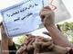

پذيرش > تریبون > مقالات > بیانیه بیش از 350 تن از مدافعان حقوق زنان به مناسبت روز جهانی زن؛ زنان هر روز (...)


 بیانیه بیش از 350 تن از مدافعان حقوق زنان به مناسبت روز جهانی زن؛ زنان هر روز فرودستتر میشوند بیانیه بیش از 350 تن از مدافعان حقوق زنان به مناسبت روز جهانی زن؛ زنان هر روز فرودستتر میشوند
16 اسفند 1392 - - نسخه قابل چاپ
تغییر برای برابری: به مناسبت روز جهانی زن، مصادف با 17 اسفند 1392، بیش از 350 تن از مدافعان حقوق زنان با انتشار بیانیه ای نسبت به روند فرودستتر شدن زنان در جامعه ایران هشدار دادند. در این بیانیه به روند فقیرتر شدن زنان در جامعه اشاره شده و در این ارتباط نسبت به عواقب سیاست «خصوصیسازی نظام سلامت و بهداشت» و همچنین تصویب طرح «افزایش جمعیت و تعالی خانواده» هشدار داده شده است. در ادامه بیانیه، تبعات منفی «آلودگیهای زیست محیطی» بر زنان مورد توجه قرار گرفته و سرانجام جریان به حاشیه راندن زنان از عرصه زندگی اقتصادی، اجتماعی و سیاسی مورد انتقاد قرار گرفته است. متن کامل این بیانیه در ادامه آمده است:
هشت مارس نود ودو؛ هشدار نسبت به روند فرودستتر شدن زنان
بیش از صد سال از مبارزات جهانی زنان برای رسیدن به برابری میگذرد. این مبارزه نه منحصر به کشور و منطقهی خاصی بوده و نه به نژاد و طبقهی خاصی محدود شده است. هشت مارس هر سال تلنگری است برای نگاهی دوباره به مبارزهی زنان با مناسباتِ دنیایی که جنسیت در آن عامل تبعیض است، نگاهی دوباره به راهی که پشت سر گذاشتیم، دلگرمی برای پیمودن راهی است که پیش رو داریم، مبارزهای طولانی و نفسگیر که تنها با همبستگی در عین حفظ هویت مستقل ممکن خواهد شد.
ایران نیز از قریب به صد سال پیش تاکنون شاهد مبارزات شجاعانهی زنان برای رسیدن به برابری بوده است. امروز نیز علیرغم دشواریهای تحمیلشده بر حرکتهای زنان، این مبارزه هنوز با امید رسیدن به برابری و رها شدن از ستم تاریخی ادامه دارد؛ تلاشهایی که با کامیابیهایی همراه بوده و در مقاطعی با خشونت سرکوب شده است.
سالی که گذشت محمل اتفاقات خوب و بدی برای زنان بود. برای نمونه، علیرغم ایجاد موانع بسیار برای ورود دانشجویان دختر به دانشگاهها و تلاش برای دور کردن آنها از رشتههای خاص و بهویژه رشتههای دانشگاهی درآمدزا، امسال نیز، آنها سهم زیادی در قبولی دانشگاهها در مقطع کارشناسی داشتند. متأسفانه شمار خبرهای خوب در مقایسه با اخبار نگرانکننده بسیار ناچیز بوده است. حتی ورود دختران به دانشگاه با اما و اگرهای فراوان، با ممنوعیتها و سهمیهبندیهای تبعیضآمیز همراه بوده است.
شرایط زندگی برای زنان هر روز سختتر میشود. هر روز شاهد ارادهای هستیم که تلاش میکند نیمی از جمعیت فعال جامعه که در ساختن زندگی انسانی نقشی بسیار پویا و فعال دارند را به حاشیه براند و از مزایای زندگی انسانی و برابر با مردان محروم کند. این شرایط، زندگی را برای زنان هر روز سخت و سختتر میکند. سال 92 نیز مانند بسیاری از سالهای پیشین سرشار از خبرهای ریز و درشتی بود که هر کدام به شکلی زندگی زنان را تحت تأثیر خود قرار میداد، از دید ما یکی از نتایج فاجعهبار تحقق این اراده، در خطر قرار گرفتن سلامت زنان و فرو افتادن آنها در چرخهی فقر و فرودستی است. چه بسا که ترکیب این دو میتواند موقعیت زنان را بیشتر از گذشته به سوی فرودستی سوق دهد. از جمله مسائلی که در این زمینه میتوان شاهد آورد موارد زیر است:
خصوصیسازی نظام سلامت و بهداشت. سرانه بهداشت کشور پایین است و حتی این سرانه پایین نیز در جای مناسب هزینه نمیشود. از نخستین گروههایی که از امتیاز همین خدمات اولیه ناکافی برکنار میمانند، زنانی هستند که شمار رسمیشان زیر عنوان «زنان سرپرست خانوار» 2 میلیون تن تخمین زده شده است و این در حالی است که در لایحه اخیر بودجه «برای بیمه زنان خانهدار متاهل با اولویت سرپرست خانوار» مبلغ 150 میلیارد ریال پیش بینی شده که تنها برای بیمه کردن 14 هزار نفر کافی خواهد بود. چه کسی پاسخگوی زنانی خواهد بود که اینجا و آنجا به دلیل ناتوانی از پرداختن هزینههای درمانی، سلامتی خود را از کف میدهند. ما بیش از پیش نگرانیم که در فقدان نظارتهای مردمی، خصوصیسازی نظام سلامت، سلامت زنان را به خطر اندازد.
تصویب قریبالوقوع «طرح افزایش جمعیت و تعالی خانواده». طرح جامع افزایش جمعیت و تعالی خانواده در حالی به زودی برای تصویب در صحن علنی مطرح میشود که همان مقدار اندک خدمات رایگان پیشگیری از بارداری نیز پس از تصویب این طرح از زنان گرفته خواهد شد. فشارهای متنوع بر زنان برای فرزندآوری بیشتر تنها هدف نوشته شدن این طرح است. تبعیض در دستیابی به موقعیت شغلی، تعریف و ترویج زن به عنوان محملی برای فرزندان بیشتر و جمعیت بیشتر، از جهات بسیاری سلامت و توان اقتصادی زنان را هدف گرفته است. با غیرقانونی شدن جلوگیریهای دائم از بارداری، توقف توزیع وسایل پیشگیری، از جمله کاندوم در مراکز بهداشت، بالارفتن قیمت قرصهای ضدبارداری و فرصتهای محدود اشتغال برای زنان، چه کسی پاسخگوی آمار فزایندهی سقطجنینهای غیرقانونی، انتشار بیماریهای مقاربتی از جمله ایدز و هپاتیت به ویژه در میان زنان و به دنیا آمدن کودکانی که با توجه به سیاستهای دولتی، دیگر از پوشش خدمات سلامت و بهداشت و آموزش رایگان بهرهای ندارند- خواهد بود؟
آلودگیهای زیستمحیطی. امسال نیز مانند چند سال گذشته علاوه بر ادامهی وضعیت بحرانی بسیاری از زیستبومها، شاهد آلودگی هوا در شهرهای بزرگ و هجوم ریزگردها در برخی شهرهای کشور بودیم. آلودگی هوا یکی از عوامل موثر بر سلامت زنان به ویژه زنان باردار، افراد سالمند، بیماران قلبی و کودکان است. چه کسی مسئول حفظ سلامت مادر و جنینی است که او حمل میکند؟ آیا واقعاً آگهیهایی از قبیل «گروههای حساس از فعالیت شدید بدنی و رفت و آمد غیر ضروری در معابر پرهیز کنند»کافی است؟ آیا سفارشهای «ماری آنتوانت» گونه خطاب به مردم فرانسه که «اگر نان ندارند، بیسکویت بخورند» کافی است که مدام بشنویم «خوردن شیر و فراوردههای لبنی بیشتر برای کاستن از ضررهای آلودگی ضروری است»؟
به حاشیه راندن زنان از عرصه زندگی اقتصادی، اجتماعی و سیاسی. برپایهی آمار منتشر شده از سوی مرکز آمار ایران در سال 91، سهم زنان از بازار اشتغال در ایران تنها 13 درصد است. این سهم اندک از منابع کسب درآمد در کنار تصویب طرحهایی همچون «طرح جامع افزایش جمعیت و تعالی خانواده» و سیاستهای آموزشی که دسترسی زنان را به رشتههای درآمدزا محدود کرده، آنها را به مرور فقیرتر و وابستهتر میکند. تنها بازار کاری که در انتظار زنان است، بازار غیررسمی با دستمزدهایی ادواری و پایین و بیثبات است. این موضوع زنان را از نظر اقتصادی به کل وابسته کرده و آنها را نه تنها در معرض خشونتهای بیشتر قرار میدهد، بلکه سهم آنها را از سلامت نیز کاهش میدهد، چرا که تبعیض جنسیتی در همدستی با تبعیض طبقاتی، زنان را در خانوادههای کمبضاعتتر در انتهای صف دسترسی به خدمات بهداشت و سلامت مینشاند.
زنان سهم مشارکت بسیار پایینی در مراجع تصمیمسازی و سیاستگذاری دارند، نسبت پایینی از کرسیهای مجلس به زنان اختصاص دارد و هیچ وزیر زنی در کابینه دولت حضور ندارد. نمایندگان تفکر برابری جنسیتی حضوری حتی کمرنگتر از حضور فیزیکی زنان در پستهای تصمیمسازی دارند، تشکلها و نهادهای مستقل زنان همواره با اتهامات امنیتی روبرو بوده و سرکوب شدهاند، هیچ تلاشی برای رسیدن به برابری و در دست گرفتن کنترل و اختیار زندگی از سوی مراجع دولتی تحمل نمیشود و هر روز طرح و لایحهی جدیدی از آستین آنها بیرون میآید که زندگی زنان را به عقب میراند.
ما – گروهی از افراد و نهادهای مستقل فعال در حوزه زنان – معتقدیم که باید نسبت به هر آنچه سلامت و وضعیت اقتصادی زنان را به ویژه تنگدستترین ما را به خطر میاندازد، حساسیت نشان دهیم و در هر موقعیتی هستیم توجه دیگران را به این موضوع جلب کنیم. کوشش برای رسیدن به «برابری جنسیتی» برای رسیدن به جامعهای که زنان و مردان در آن زندگی شایسته و به دور از تبعیضی داشته باشند، حیاتی است. به باور ما بالندگی اجتماعی و فرهنگی جز از مسیر برابری جنسیتی نمیگذرد. به رسمیت شناختن حق مشارکت زنان در تصمیمسازیها، فراهم شدن فضایی آزاد و امن برای تشکلیابی مستقل زنان، به رسمیت شناختن حق زنان بر بدن خویش، تلاش برای بالا بردن سهم زنان از بازار اشتغال رسمی، اصلاح تبعیضات قانونی که زنان را در دعاوی خانوادگی و زندگی اجتماعی در موقعیت فرودست قرار میدهد، حداقل گامهایی است که باید برای رسیدن به برابری جنسیتی مورد توجه قرار گیرد.
ما هشت مارس را که روزی برای پاس داشتن مبارزات زنان جهان در راه احقاق حق خود بوده گرامی میداریم و ضمن اعلام همبستگی با مبارزات خواهرانمان در منطقه و جهان، آرمان مبارزه خود را رسیدن به جهانی میدانیم که در آن تمامی مناسبات تبعیضآمیز مبتنی بر جنسیت، نژاد، قوم، ملیت و طبقه از تمامی عرصههای عمومی و خصوصی برچیده شود و دنیایی انسانی و برابر بسازیم.
هشت مارس بر همهی زنان و مردان خواهان برابری و آزادی مبارک باشد.
هفدهم اسفند 1392
اسامی به ترتیب حروف الفبا
آبتین بکتاش، اتنا مرکزی، احترام شادفر، اختر اوهانی، آذر غفاری، آذر یغمایی، آرزو پوراسماعیلی، ارژنگ نجاریان، آرش سالار، آرش نصیری اقبالی، آرمین مداح، آزاده بهکیش، آزاده خرازى، آزاده فرامرزیها، آزاده مولوی مقدم، اسماعیل زرگریان، آسيه امينى، آسیه علی نژاد، اشکبوس طالبی، اعظم خاتم، اعظم شاهرخی، افرا شکرلو، افروز مغزی، اکرم احقاقی، اکرم خیرخواه، آلما بهمن پور، آلیس کاراپتیان، آمنه زماني، آمنه شیرافکن، آمنه ناصرحجتی، امید زمانی، امید منتظری، امیر رشیدی، امیر زرگری، امیر صحتی، امیر کلهر، امیر نیک پی، امیر یعقوبعلی، امین پارسا، انسیه لقمانی، اولدوز طوفانی، اویس اخوان، آیدا ابروفراخ، آیدا سعادت، آیدا نجفی، ایراندخت فامیلی، الناز محمدی، الناز ناطقی، الهام قیطانچی، الهه امانی، الهام آقاخانی؛
باقر قلیائی، بشیر احسانی، بنفشه جمالی، بنفشه رنجی، بهار خسور، بهار فامیلی، بهارا بهروان، بهاره محمدیان، بهروز ستوده، بهنام امینی، بیتا یاری، پانتهآ واعظی، پروین ذبییحی، پروانه زندی، پروانه قاسمیان، پروانه ناطقی، پروين ملك، پرویز مختاری، پروین اردلان، پریسا پویان راد، پریسا روشن فکر، پریسا کاکائی، پریسا نخعی، پویا جهاندار، پیام حیدرقزوینی، تايماز منقبتى، ترانه بنی یعقوب، تکتم معصومیان، تورج پاشایی، ثمره شاه صفی، جادی میرمیرانی، جعفر مرتضوی، جلوه جواهری، جمشید کوثری، جیران مقدم، جیران مهربان، حامد پناهنده، حسین علوی، حمید رضا واشقانی فراهانی، حمیده نظامی، حنانه پتکی، خدیجه مقدم، خوب چهر کشاورزی، خیزران اسماعیل زاده؛
دلارام علی، دامین نهتینی، رامین عسکری زاده، رزیتا رجایی، رضا اسکندری، رضا سیاووشی، رضوان مقدم، رعنا بنی هاشمی، رقیه رضائی، رها بحرینی، رها عسکری زاده، روژین محمدی، رویا کاشفی، رویا محمدی والا، ریحانه ذاکری، زارا امجدیان، زهرا آزادفلاح، زهرا خندان، زهرا رفعت نژاد، زهرا مجد، زهرا مینویی، زهرا نسیم فر، زهره ارزنی، زهره اسدپور، زویا امین، زینب غنی، ژاله شادیتاب، ژیلا کرم زاده مکوندی؛
ساچلی امیر فاطمی، سارا سردشتی، سارا صحرانورد فرد، سارا کریمی، سارا محمدی اردهالی، ساقی لقایی، ساناز توسلی، ساينا مقصودي لويه، سایه نسیما، سپهر ساقی، سپیده پورمحمدی، سپیده پورمحمدی، سپیده جدیری، ستاره سجادی، ستاره هاشمی، سحر دیناورد، سحر سجادی، سعادت پیرانى، سعید امین، سعید موغانلی، سعیده عزت باغانی، سمانه خادمی، سمانه عابدینی، سمیرا افخمی، سمیرا الیاسی، سمیه رشیدی، سهراب مهدوی، سهیلا ستاری، سوده احمدی، سوزان کریمی، سیما حسین زاده، سیما شاه عباسی، سیمین بهادری زاده، سیمین زارع، سیمین کاظمی، سیمین مرعشی، سینا حقانی، شاهپر بامداد، شعله ایرانی، شقایق اکرم، شکیبا فائزی پور، شهابالدین شیخی، شهرزاد كيهان، شهلا جعفریان، شهلا عبقری، شهلا هویدا، شهین غلامی، شهین غلامی، شیرین شریفی؛
صفورا الیاسی، طاهره ابراهيميان، طاهره رحیمی، طلعت تقی نیا، عارل مقرس، عالیه مطلب زاده، عسل اخوان، عفت ماهباز، علی اشرفی، علی شب بویی، علی کلائی، علی ماهباز، علی منفرد، علی نیکویی، عماد برقعی، غزال شولى زاده، غزال عسکری زاده، فائزه اثناعشری، فائزه کثیر، فاطمه خانی، فاطمه رضایی، فاطمه مسجدی، فایزه امیر فاطمی، فتانه بادكوبه، فتانه بادكوبه، فتانه صادقی، فتانه عبدالحسيني، فخری شادفر، فراز قضات، فرانک فرید، فرزانه پارسايي، فرزانه جلالی فر، فرزانه راجي، فرزانه طاهري، فرزیا ثابتی، فرشته ذاکر، فرشته طوسي، فرشته عمیق ممیز، فرنگیس بیات، فرنوش پورصفوی، فرهاد میثمی، فروغ جواهري، فروغ سمیع نیا، فروغ عزیزی، فریبا داودی مهاجر، فریبا مخبر، فرید اشکان، فریدا آفاری، فریده غائب، فهمیه بادکوبهای، فهیمه بهرامی، فواد شمس، فيروزه رمضان زاده، فیروزه مهاجر، کاوه رضائی شیراز، کاوه کرمانشاهی، کاوه مظاهری، کاوه مظفری، کوروش صحتی، كيانا حسيني، گندم احتشام، گیتی جوادی، لادن جعفری، لیلا پزشک، لیلا روستایی صفت، لیلا سیف اللهی، لیلی بهبهانی؛
مانی هوشور، ماهان محمدی، محبوبه حسین زاده، محبوبه عباسقلی زاده، محبوبه کرمی، محسن هویدایی، محمد حسن شفیعی، محمد حسن یوسف پور، محمد شوراب، محمود کشاورز، مرجان نمازی، مرضیه بیهقی، مرمر مشفقی، مريم امى، مريم جعفريه، مریم اشرافی، مریم اهری، مریم بهرمن، مریم پرواز، مریم حاجیلویی مبتکر، مریم حقانی، مریم رحمانی، مریم روستایی صفت، مریم زندی، مریم طهماسبی، مریم کاویانی، مریم میرزانژاد، مریم یاسمین، مریم یاوری، مژگان جعفریان، مسعود ابراهيم نيا، مسعود شب افروز، معزز هدايتي نوجو، معصومه زمانی، معصومه علیزاده، معصومه مرادی نور، ملوک عزیززاده، منصوره بهکیش، منصوره شجاعی، منيره كاظمى، منیژه مرعشی، مهدی پناهنده، مهدیه زهدی، مهدیه فراهانی، مهران براتی، مهران بوالحسنی، مهرنوش اعتمادی، مهری جعفری، مهسا شکرلو، مهشید یوشی، مهناز پراکند، مهین جعفری، مهین رضوی، مهین شکرالله پور، میترا آذرم، میترا غفاریان، مینا کشاورز، مینا محبوبی، مینو بقایی، مریم دانشمندمنش؛
نسرین ستوده، نادر حاجی محسن، نادر فروزی، نازلي محجوب، نازلی امیر فاطمی، نازلی یزدیزاده، ناهید توسلی، ناهید جعفری، ناهید حسینی، ناهید کشاورز، ناهید میرحاج، ناهید ناظمی، نرگس طیبات، نسترن موسوی، نسترن نسیم فر، نسیم ریاحی، نسیم فروردین، نعیمه دوستدار، نفیسه آزاد، نقی رشیدی، نگار انسان، نگار رستم زاده، نگار رشیدی، نگین باقری، نگین وطندوست، نوشین کشاورزنیا، نويد محبي، نیره توحیدی، نیره جلالی (مادر بهکیش)، نیکزاد زنگنه، نیما رشیدی، هایده مغیثی، هلنا رحمت خواه، هما بدیهیان، وحيده مولوي، وحید شجاعی، یاسر عزیزی، یاسمین قلعهنویی، یداله بلدی.
لینک بیانیه در سایت «تا قانون خانواده برابر»
ارسال به
بالاترین
،
توییتر
،
فریندفید
،
فیسبوک
در همين بخش :
 دهمین دورۀ مراسم تندیس صدیقه دولت آبادی ۱۳۹۲ دهمین دورۀ مراسم تندیس صدیقه دولت آبادی ۱۳۹۲
کارت پستالهایی به بهانهی هشت مارس و به یاد همهی مبارزین راه برابری
بیانیه بیش از 350 تن از مدافعان حقوق زنان به مناسبت روز جهانی زن؛ زنان هر روز فرودستتر میشوند
لباسی که برای تن ما دوخته اند! /اعظم بهرامی
چالشها و چشمانداز فعالیت مدنی زنان
ديگر بخش ها :
طرح یک میلیون امضا
|
مقالات
|
سایت نوشته ها
|
اخبار
|
گزارش كمپين
|
گفت و گو
|
علیه سکوت
|
كوچه به كوچه
|
نامه های شما
|
گزارش ویژه
|
گفتگو با اعضا
|
ویژه سالگرد کمپین
|
تصویر برابری
|
دل آرام علی
|
تریبون
|
مقالات
|
تاریخ شفاهی
|
خارج از چارچوب
|
کتابخانه
|
درباره کمپین
|
کمپین در شهرها
|
کمپین در بند
|
صدای تغییر
|
ویژه 22 خرداد
|
لایحه حمایت از خانواده
|
گالری
|
عشا مومنی
|
امیر یعقوبعلی
|
خدیجه مقدم
|
راحله عسگری زاده و نسیم خسروی
|
پروین اردلان،جلوه جواهری، مریم حسین خواه، ناهید کشاورز
|
زینب پیغمبرزاده
|
سعیده امین، سارا ایمانیان، محبوبه حسین زاده، ناهید کشاورز و همایون نامی
|
احترام شادفر
|
نسیم سرابندی زاده،فاطمه دهدشتی
|
وبلاگ مهمان
|
پرونده خرم آباد
|
دستگیری ها
|
مریم مالک
|
پرستو اللهیاری
|
مهرنوش اعتمادی
|
سمیه رشیدی
|
Other Languages
|
همراهان
|
«فراخوان کمپین ده روز با بهاره هدایت»
| English
|